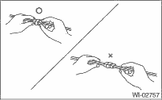
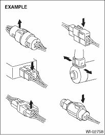
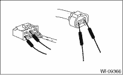

WIRING SYSTEM > Working Precautions
PRECAUTIONS IN TROUBLE DIAGNOSIS AND REPAIR OF ELECTRIC PARTS
1. The battery cable must be disconnected from the battery’s (−) terminal, and the ignition switch must be set to the OFF position, unless otherwise required by the diagnostics.
2. Securely fasten the wiring harness with clamps and clips so that the wiring harness does not interfere with the body end parts or edges and bolts or screws.
3. When installing parts, be careful not to catch them on the wiring harness.
4. When disconnecting a connector, do not pull the harness, but pull while holding the connector body.

5. Some connectors are provided with a lock. One type of such a connector is disconnected by pushing the lock, and the other, by moving the lock up. In either type the lock shape must be identified before attempting to disconnect the connector.
To connect, insert the connector until it snaps and confirm that it is connected securely.

6. When checking continuity between connector terminals, or measuring voltage across the terminal and ground, always contact tester probe(s) on terminals from the wiring connection side. If the probe is too thick to gain access to the terminal, use “mini” test leads.
To check water-proof connectors (which are not measurable from the harness side), contact test probes on the terminal side, paying attention not to bend or damage the terminal.

7. Sensors, relays, electrical unit, etc., are sensitive to strong impacts.
Handle them with care so that they are not dropped or mishandled.